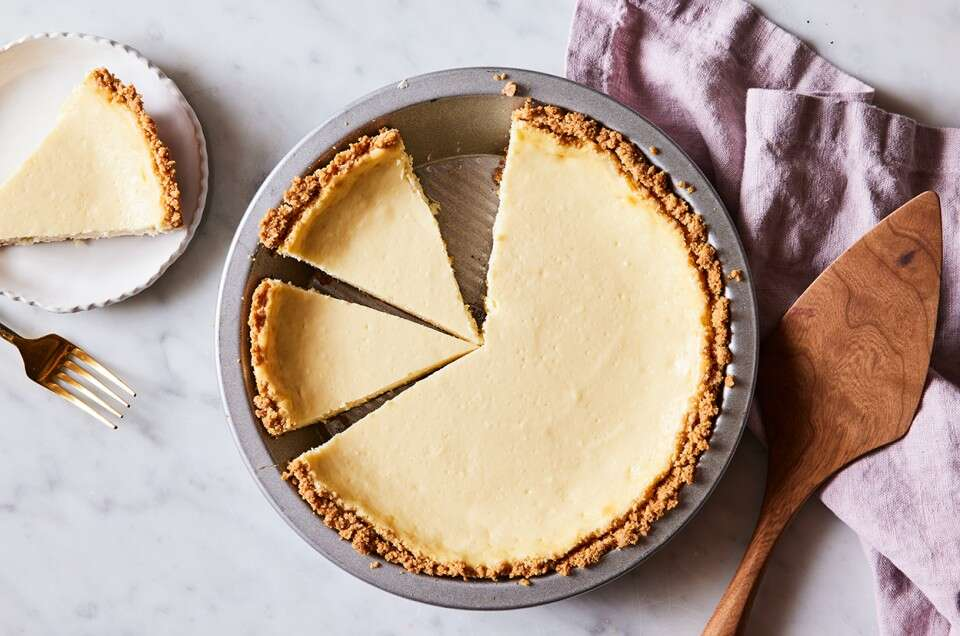

Cheesecake

Description
Delicious easy cheesecake recipe with just 4 simple ingredients that bakes in 30 mins.
Ingredients
Crust
1 1/2 cups graham cracker crumbs
1/4 cup sugar
5 1/3 tablespoon butter, melted
1/8 teaspoon salt
Filling
2 8-ounce cream cheese (room temperature)
2/3 cup granulated sugar
2 large eggs
1 teaspoon pure vanilla extract
Steps
- Select a pie pan whose inside top dimension is at least 9", and whose
height is at least 1 1/4". Preheat the oven to 350°F
- To make the crust: Stir together all of the crust
ingredients, mixing until thoroughly combined.
- Press the crumbs into the bottom and up the sides of the pie pan,
making a thicker layer on the bottom than on the sides.
- To make the filling: Mix together the room-temperature cream cheese
and sugar until smooth. Mix in the eggs and vanilla, again mixing until smooth.
To avoid beating too much air into the batter, use a mixer set at low-medium speed.
To avoid lumps, make sure the cream cheese is softened, and/or at room temperature.
- Set the pie pan onto a baking sheet, if desired; this makes it easier to transport
in and out of the oven, and also protects the bottom of the crust from any
potential scorching. Pour the filling into the crust.
- Place the cheesecake in the oven. Bake it for 20 minutes, then add a crust shield;
or shield the crust with strips of aluminum foil. Bake for an additional 10 minutes
(for a total of about 30 minutes).
- Remove cheesecake from overn and set on rack to cool.
Once cool, refrigerate it, covered.
- Serve cheesecake in wedges.